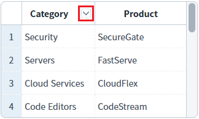
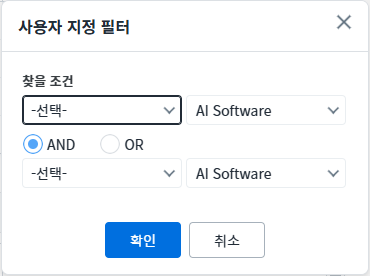
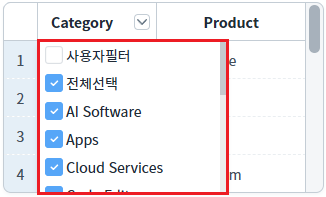
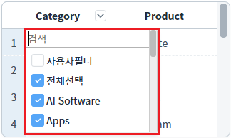
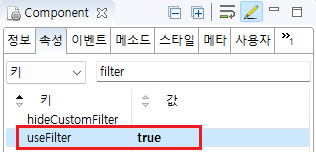
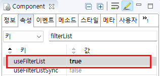
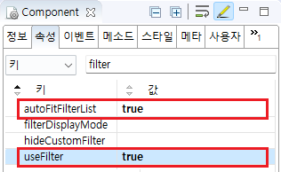
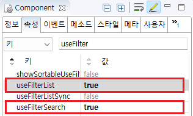
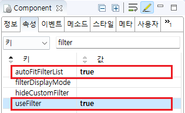

GridView에서 사용자가 직접 필터를 설정할 때, 사용하는 UI 유형을 비교한 예제입니다. 기본 설정은 '필터 사용 안함'이며, 설정을 통해 다음의 필터 기능을 사용할 수 있습니다.
팝업형 필터 : 필터 설정을 팝업으로 제공하며, 확장된 필터 기능을 제공합니다.
콤보 박스형 필터 : 지정한 컬럼의 중복되지 않은 데이터를 콤보 박스로 표현하여 제공합니다.
콤보 박스형 팔터 + 검색 : 지정한 컬럼의 중복되지 않은 데이터를 콤보 박스로 표현하여 제공합니다. 목록 상단에 입력 필드가 구성되어 사용자가 검색어를 입력할 수 있습니다.
(기본 설정) 필터 설정 없음
팝업형 필터 설정
콤보 박스형 필터 설정
콤보 박스형 필터 + 필터 검색 설정
각 GridView의 헤더 [Category]에 있는 아이콘을 클릭하여 필터 형태를 비교합니다.
1
GridView의 필터 아이콘
헤더의 오른쪽에 필터 아이콘(버튼)이 추가됩니다.
아이콘을 클릭하면 필터 기능을 사용할 수 있는 UI가 제공됩니다.
Image 1.브라우저(Chrome) 실행 예시 - 필터 아이콘

1
예제 영역 '팝업형 필터 설정'에 구성된 GridView의 헤더에 구성된 필터 아이콘을 클릭합니다.
팔터 조건을 설정할 수 있는 팝업이 표시됩니다.
Image 2.브라우저(Chrome) 실행 예시 - 팝업형 필터 설정

1
예제 영역 '콤보 박스형 필터 설정'에 구성된 GridView의 헤더에 구성된 필터 아이콘을 클릭합니다.
중복되지 않은 컬럼 데이터를 콤보 박스로 제공합니다.
Image 3.브라우저(Chrome) 실행 예시 - 콤보 박스형 필터 설정

1
예제 영역 '콤보 박스형 필터 + 필터 검색 설정'에 구성된 GridView의 헤더에 구성된 필터 아이콘을 클릭합니다.
중복되지 않은 컬럼 데이터를 콤보 박스로 제공되며, 데이터를 검색할 수 있는 입력 필드가 상단 영역에 표시됩니다.
Image 4.브라우저(Chrome) 실행 예시 - 콤보 박스형 필터 + 필터 검색 설정

GridView와 연결된 DataList 생성 및 연결 방법은 생략되었습니다.
1
GridView 헤더 컬럼의 속성을 정의합니다.
[필수] useFilter="true"
[default:false, true] 필터 사용 여부.
Image 5.웹스퀘어 스튜디오의 Component View - 헤더 컬럼 속성 설정 예시

Example 1.Source
<!-- gridView 의 소스 본문 예시 --> <w2:gridView> <w2:header id="header1"> <w2:row id="row1"> <w2:column useFilter="true" value="Category" id="column2"> </w2:column> <!-- 중략 --> </w2:row> </w2:header> <!-- 중략 --> </w2:gridView>
1
STEP 1: GridView의 속성을 정의합니다.
[필수] useFilterList="true"
[default: false, true] 필터링 대상 값을 목록으로 표시할 지의 여부
Image 6.웹스퀘어 스튜디오의 Component View - 속성 설정 예시

2
STEP 2: GridView 헤더 컬럼의 속성을 정의합니다.
[필수] useFilter="true"
[default:false, true] 필터 사용 여부.
[선택] autoFitFilterList="true"
[default: false, true] 필터 list에 있는 item 길이에 맞게 콤보 박스의 width가 조정되도록 설정. useFilterList와 useFilter 속성의 값이 "true"인 경우만 적용됩니다.
Image 7.웹스퀘어 스튜디오의 Component View - 헤더 컬럼 속성 설정 예시

Example 2.Source
<!-- gridView 의 소스 본문 예시 --> <w2:gridView useFilterList="true"> <w2:header id="header1"> <w2:row id="row1"> <w2:column useFilter="true" autoFitFilterList="true" value="Category" id="column2"> </w2:column> <!-- 중략 --> </w2:row> </w2:header> <!-- 중략 --> </w2:gridView>
1
STEP 1: GridView의 속성을 정의합니다.
[필수] useFilterList="true"
[default: false, true] 필터링 대상 값을 목록으로 표시할 지의 여부
[필수] useFilterSearch="true"
[default:false, true] 필터 목록에서 사용자가 입력한 값 검색 기능.
Image 8.웹스퀘어 스튜디오의 Component View - 속성 설정 예시

2
STEP 2: GridView 헤더 컬럼의 속성을 정의합니다.
[필수] useFilter="true"
[default:false, true] 필터 사용 여부.
[선택] autoFitFilterList="true"
[default: false, true] 필터 list에 있는 item 길이에 맞게 콤보 박스의 width가 조정되도록 설정. useFilterList와 useFilter 속성의 값이 "true"인 경우만 적용됩니다.
Image 9.웹스퀘어 스튜디오의 Component View - 헤더 컬럼 속성 설정 예시

Example 3.Source
<!-- gridView 의 소스 본문 예시 --> <w2:gridView useFilterList="true" useFilterSearch="true"> <w2:header id="header1"> <w2:row id="row1"> <w2:column useFilter="true" autoFitFilterList="true" value="Category" id="column2"> </w2:column> <!-- 중략 --> </w2:row> </w2:header> <!-- 중략 --> </w2:gridView>
useFilterList
useFilterSearch
[header column] useFilter
[header column] autoFitFilterList